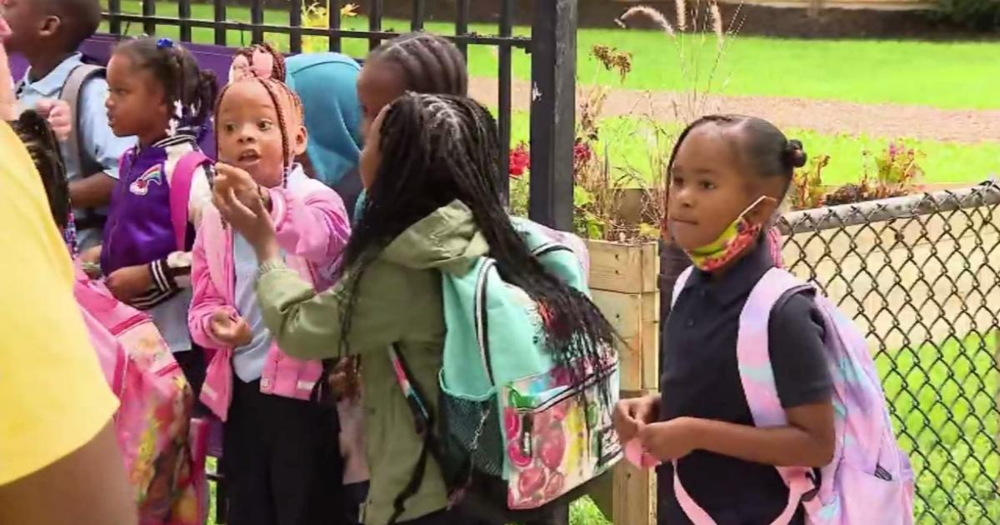

LEARN Charter School Network begins new school yearCHICAGO (CBS) -- It's time to go back to school for thousands of Chicago area children. LEARN Charter School Network welcomed back students in kindergarten through 8th grade on Monday, and one principal couldn't be more excited. Claudia Garcia, co-principal of LEARN South Chicago, said she was excited to see kids coming in for the first day of class. "Seeing those faces, especially those kindergarteners coming in, just scared but also excited," she said. LEARN charter schools start classes a full two weeks before Chicago Public Schools, but parents and students said they're not mad about that. "I think it gives me something to do. I think it gives something for everybody to do, and it just trains us for high school, and stuff like that, and it gives us more time to soak up knowledge faster," said 7th grader Kimora White. "The summer was cool, but I mean I like that we keep them engaged. So an early start date, it's fine with me," said parent Teondrell Bickart. Classes begin for CPS on Aug. 21. for more features. |
 |